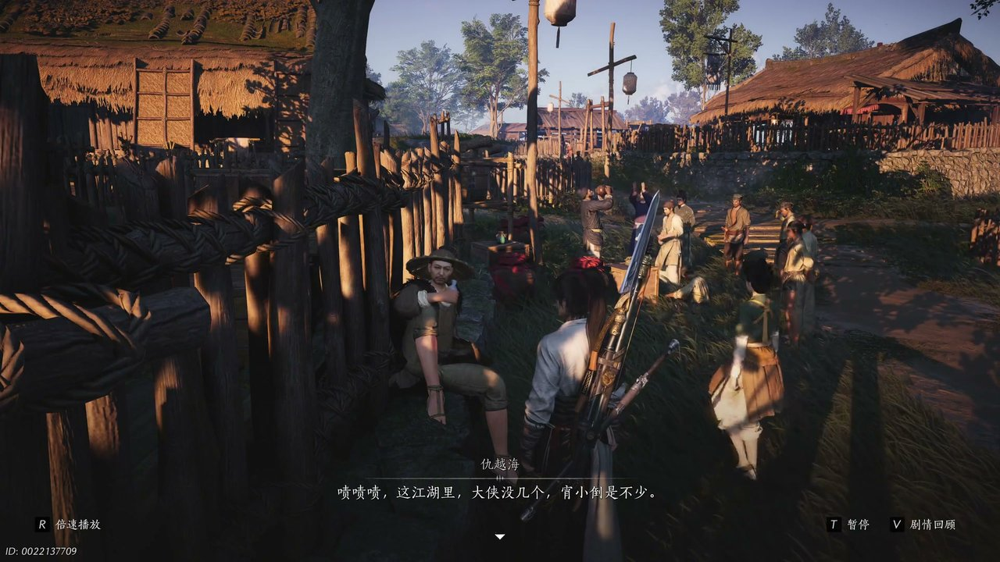
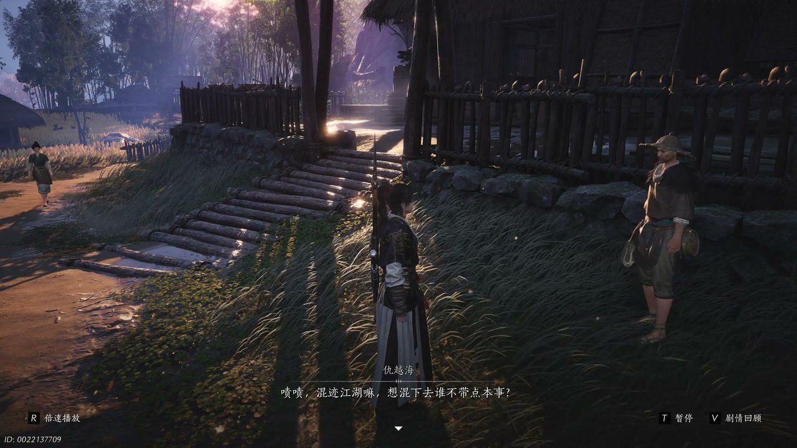
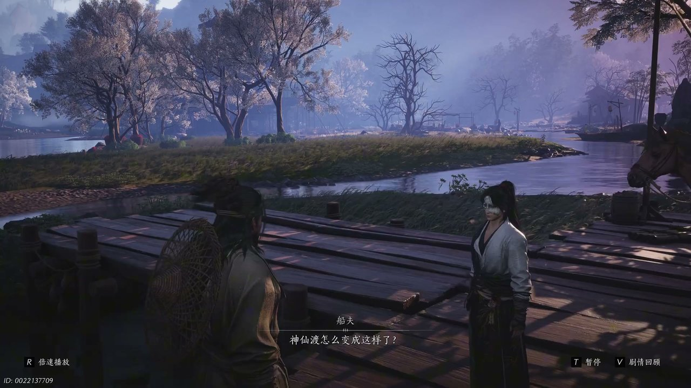
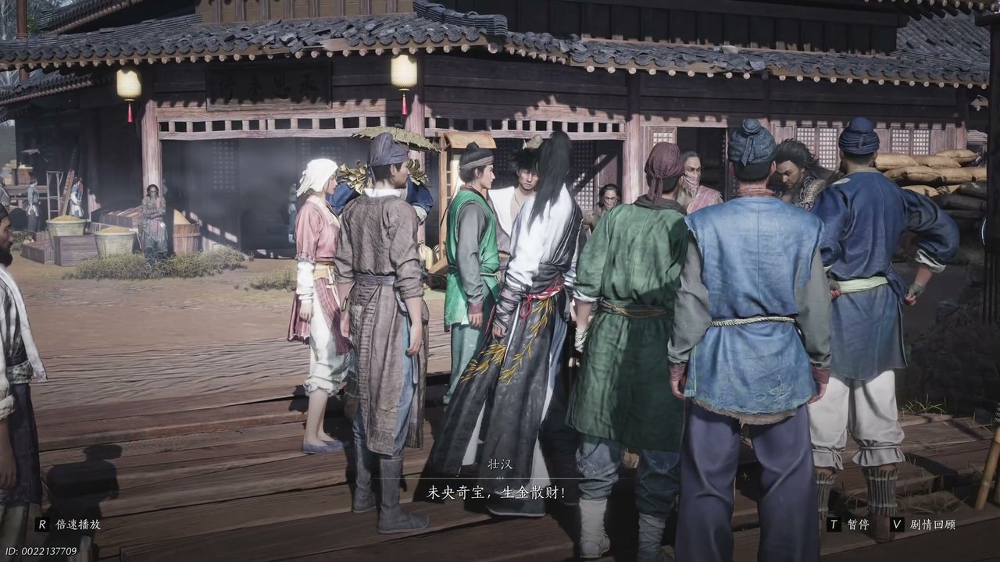
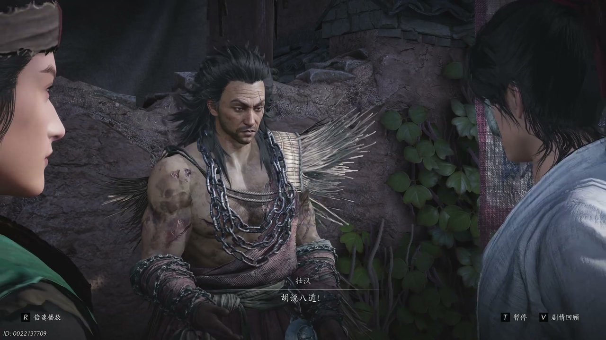
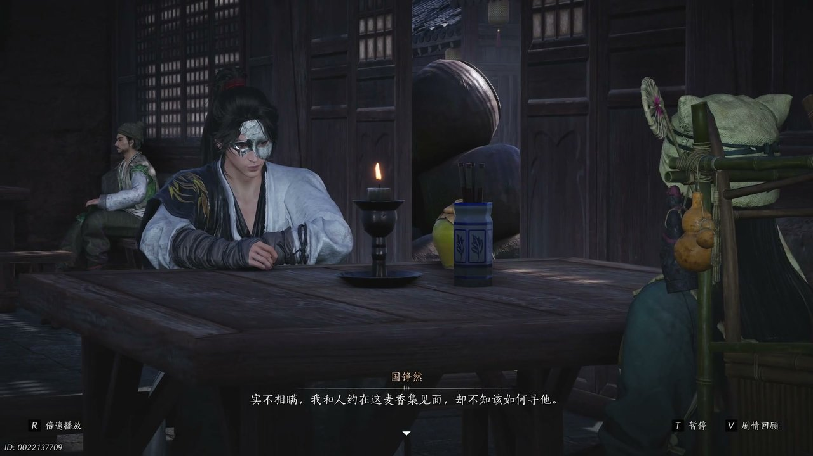

燕云背后的故事：第4集 开封
燕云背后的故事：第4集 开封

朋友们，上一集咱们说到——村落遭劫、红线殒命、少东家决意复仇；新来的朋友可能纳闷，一场寻常江湖纷争，为何会让神仙渡彻底覆灭？简单说，修金楼突袭村落布下迷阵，红线舍身护众惨死，让安稳的乡野彻底卷入江湖乱局。可他哪知道，前往开封的复仇之路，暗藏层层骗局与未知陷阱。这不，带着满心悲痛与执念，少东家辞别残破的神仙渡，乘船奔赴繁华又凶险的开封城。

苍茫天地间，萧瑟旁白缓缓诉说过往，褪去烟火的神仙渡满目疮痍，彻底成为少东家刻骨铭心的过往，他的童年与安稳岁月尽数落幕，只剩漫漫江湖前路。初入开封地界，少东家偶遇江湖前辈仇越海，对方目光通透，一语道破江湖真相。仇越海倚靠街边木柱，神态淡然看向往来路人，语气带着看透世事的沧桑说道：“这江湖里大侠没几个，宵小倒是不少。”少东家闻言驻足，眉眼间满是疑惑，主动追问其中缘由，疑惑开口：“难道这斗银赌局有什么猫腻？”仇越海抬手示意他看向街边桌案，指尖轻点桌面，揭露桌上瓶中藏有江湖秘药血宫丹，是有人用来暗中化解药力、投机取巧的手段。随后仇越海现场传授少东家隔空取物的巧技，指尖轻抬、凝神发力，便隔空将药瓶稳稳射至少东家手中，动作行云流水，看得少东家连连惊叹前辈武功高强。

街边围观百姓见状纷纷起哄，揭穿赌局背后的龌龊伎俩，原本嚣张跋扈的胡为见状慌乱不已，顾不得继续逞强，狼狈逃窜逃离人群。喧闹散去后，街头只剩少东家与仇越海二人，晚风轻轻拂过街边草木，吹动二人衣袂。少东家想起心中对江湖的憧憬，坦诚诉说自己心中所想：“江湖里有大侠，有宝藏，有明争暗斗，也有风花雪月。”仇越海闻言摇头失笑，语气恳切地告诫少东家，真正的江湖从不是光鲜模样。他缓缓说道：“混迹江湖嘛，想混下去，谁不带点本事。”随后以水中鱼群作喻，道出江湖生存法则，无论强者弱者，活着才是江湖第一要义，其余皆是后话。少东家静静聆听，心中对江湖的认知悄然改观，也更加坚定了自己闯荡江湖、亲历世事的想法。仇越海见他心性纯粹、悟性极佳，坦言他所学巧技运用得当，可借力打力、夺敌利器，一番提点后便洒脱离去，留下少东家独自感悟江湖真谛。

晨光洒落汴河水面，波光粼粼的河面映出开封繁华景致，少东家搭乘渡船正式踏入开封境内。船夫摇着船桨，目光望向远处破败村落的方向，满脸惋惜地开口询问：“神仙渡怎么变成这样了？”少东家立于船头，望着远去的故土方向，神色落寞，低声回应：“来了贼人，村子毁了。”船夫听闻后连连叹息，感慨好好一方净土惨遭祸乱。闲谈之间，船夫告知少东家，如今开封看似繁华，实则世道混乱，朝廷新策落地、铜钱稀缺，百姓生计艰难，街头人人为些许铜板争得头破血流。船抵开封码头，岸边人声鼎沸、车马络绎不绝，揽客之人争相吆喝，纷纷推介樊楼群英会、聚宝盆求财等新鲜热闹。船夫靠岸停船，再三叮嘱初入开封的少东家，城中人心复杂、物价虚高，行走世间务必多留心眼，切莫轻易轻信他人。

踏入开封闹市，街巷商铺林立、摊贩云集，市井烟火气扑面而来。街边小摊售卖着精巧的龟形配饰，往来百姓驻足挑选，一派热闹喧嚣景象。少东家一路前行，沿途不断听闻众人热议东阙公子温无缺，以及能以少得多、生金聚财的聚宝盆。不少摊贩与百姓围聚在聚宝盆摊位前，壮汉高声吆喝招揽路人：“未央取宝生金散财，投钱入盆，以少得多。”围观百姓纷纷上前尝试，争相投入铜钱期盼获利。少东家驻足观望，隐约听见人群中有人提及“无缺”二字，瞬间心生警觉，他此行开封本就为探寻线索，当即紧盯摊位动静。一旁妇人当众质疑聚宝盆暗藏猫腻，直言近来开封遍地皆是假借温无缺名头牟利的商贩，众人纷纷附和，场面瞬间热闹起来，也让少东家愈发笃定这聚宝盆背后藏有蹊跷。

围观百姓议论纷纷，摊位壮汉面色窘迫，拒不承认聚宝盆有问题，与妇人争执不休，僵持不下。人群之中，少东家冷眼旁观，早已识破其中机关，看穿所谓生金聚宝、以少得多，皆是人为操控的假象。见双方争执不休，少东家主动上前解围，面对壮汉的质疑，神色从容、底气十足地说道：“这招呢叫听风辨位，别说隔着盆了，隔着墙都能辨认有无胡说八道。”他当众直言聚宝盆内置机关，所有生金异象都是刻意营造的骗局，喊话壮汉当众掀开盆体，让百姓看清其中猫腻。围观百姓恍然大悟，纷纷称赞少东家眼光毒辣，戳破了街头骗局。壮汉百口莫辩，在众人的指责声中狼狈不堪，再也无法遮掩骗局真相，喧闹的街头闹剧就此落幕，也让少东家更加看清开封市井的人心诡诈。

市井风波过后，少东家走入街边面馆歇息，偶遇温婉女子盈盈，二人点了两碗烩面，相对闲谈。盈盈知晓少东家初到开封，满心好奇询问他来意，开口问道：“你这个时候来开封，却不是冲着聚宝盆，那你来这儿是有什么事要做吗？”少东家神色郑重，坦诚答道：“实不相瞒，我和人约在这麦香及见面，却不知该如何寻他。”盈盈听闻他一直在打探东阙公子温无缺，瞬间面露震惊，连忙讨要酒水压惊，直言此事非同小可。少东家看着随身携带的仅剩一瓶的家酿酒，神色恳切拒绝，告知盈盈这是寒姨亲手酿造的离人泪，是他仅剩的念想，也是他探寻真相、寻觅故人的寄托。闲谈片刻，盈盈忽然借口腹痛离席，许久未归。少东家迟迟不见人影，反倒被店家催结账，身无分文的他束手无策，此时才察觉自己被盈盈戏耍，只收到对方留下的一枚锦囊，暗藏新的线索与玄机。
这一集看下来，我最大的感受就是繁华市井之下，尽是藏不住的人心叵测与江湖诡诈。上一集里我们只知道村落覆灭、红线牺牲、复仇在即；到了这一集，初入开封、识破骗局、偶遇高人。温无缺究竟是何身份？盈盈刻意接近又暗藏什么目的？聚宝盆骗局背后是否藏着更大阴谋？诸多细碎线索交织，让少东家的开封寻踪之路迷雾重重，他暂未找到故人踪迹，反倒接连卷入市井风波，被层层圈套环绕。下一集核心大事件便是少东家破解锦囊线索，顺着蛛丝马迹追查盈盈下落，直面开封深层暗流。核心冲突为少东家勇闯樊楼，对峙幕后之人。观众一：少东家能否凭借智谋揭开开封层层骗局？观众二：遗失的家酿酒落入谁人之手，后续能否寻回？下一集关键词：樊楼探秘、线索浮现、暗流涌动。
关于我们
📱 公众号名称：三天游戏
✍️ 作者：曾三天
扫码关注公众号，获取每日最新资讯

商务合作与版权
商务合作 / 内容投稿 / 品牌推广
请关注公众号「三天游戏」后台留言联系
版权声明：本文由作者整理，转载需注明出处。